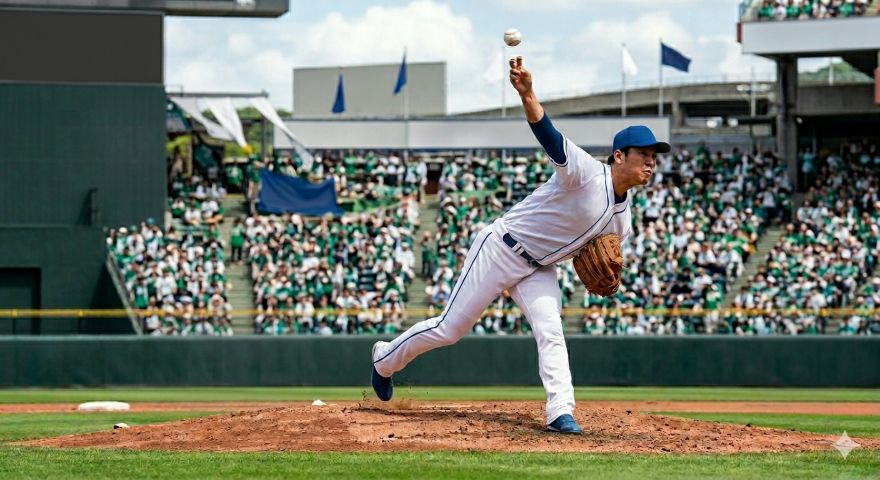

中村式変化球完全攻略へようこそ
野球人口が減少する今こそ、チームを牽引する「花形」と言われる投手の魅力を伝えたいと思いました。小中高生に変化球という武器で、体格差を覆す醍醐味を教えます。マウンドという自分が輝ける最高の舞台で、自分だけの「必殺技」で打者を翻弄する快感は、一生の自信に繋がります。正しい知識で怪我を防ぎつつ、知略で勝負する楽しさを通じて、投手という主役に憧れる心を育み、野球文化を次世代へ繋ぐことが本講座の趣旨です。
変化球の歴史
NPB初期から現代にいたるまでの投手の変化に伴う球種の変化/更新スケジュール「固定」
「配球」とは何なのか
NPBとMLBのレジェンドたちから学ぶ配球の奥深さについて/打者の心理を読み、球種とコースを組み合わせて打ち取る戦略/更新スケジュール「固定」
NPBとMLB投手から学ぶ現代で通用する球種
日米のトップ投手が駆使する最先端の勝負球分析し武器にする・小中学生でも投げられる球種について/その週に活躍した選手の紹介と球種の紹介/更新スケジュール「毎週金曜日更新]
コンテンツ概要表
| 中村式変化球講座 カリキュラム一覧 | |||
|---|---|---|---|
| カテゴリ | テーマ | 対象者 | 更新スケジュール |
| 理論・基礎編 | 変化球の歴史 | 全対象 | 固定 |
| 「配球」とは何なのか | 中級者向け | ||
| 実践・分析編 | 現代で通用する球種 | 中級〜上級者向け | 毎週金曜日更新 |
更新情報
- 選択したリンクを赤文字にして視認性を向上
- コンテンツ概要表を追加しました。
- 最新の勝負球分析コラムを公開しました。
- 配球の奥深さについての解説を追加しました。